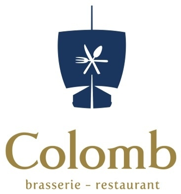
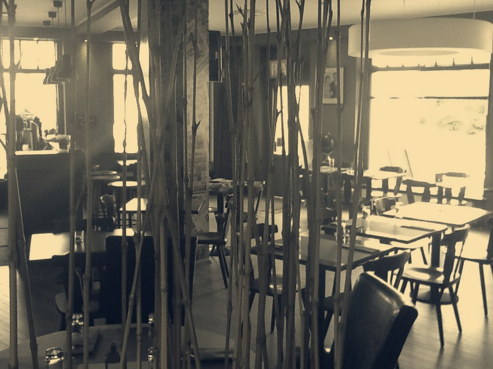
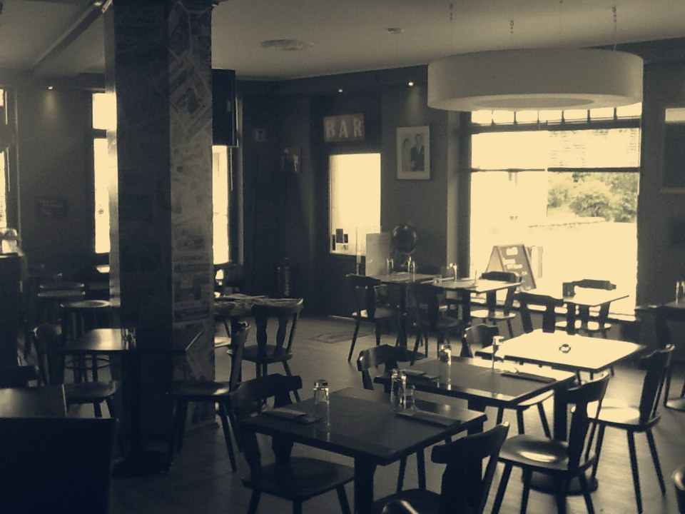

Colomb
Brasserie franco-italienne · Gasperich
Une brasserie de quartier à Gasperich, où le menu du jour côtoie la pizzeria — sur la rue qui porte le nom du navigateur.

Gasperich · depuis la rue ColombLe nom d'une rue, le geste d'un navigateur.
La maison tient son nom de son adresse : 1, rue Christophe Colomb, à Gasperich. Elle en a fait une enseigne — une coque de navire, fourchette et cuillère croisées en guise de voile, suspendue à un mât.
Deux cuisines qui se rencontrent dans la même salle, sans façon — jusqu'à la pizza que la maison a nommée d'après elle-même : la « Colomb ».
Deux traditions, la même salle.
Plats du jour, suggestions du chef et grillades côté brasserie ; pizzas, pâtes et desserts italiens côté pizzeria — servis sous le même toit, à Gasperich.


Un coin BAR, un match, une table pour dix.
Gasperich s'est fait quartier d'affaires — Cloche d'Or n'est pas loin — et la maison en a gardé l'esprit : un coin BAR avec écrans pour le sport, de grandes tables pour les collègues ou la famille, et le rythme d'une adresse de semaine plutôt que d'une sortie du dimanche.
Un exemple de carte — le format de la maison.
La carte évolue avec les saisons ; voici un exemple déjà servi à l'enseigne, à titre indicatif. Plats et prix actuels à confirmer sur place.
Exemple de carte déjà servie à l'enseigne ; la pizza « Colomb » figurait bel et bien sur leur tableau du menu du jour — si elle est toujours au menu, sa recette exacte et son prix restent à confirmer. Plats, garnitures et prix actuels à confirmer avec l'établissement.
1, rue Christophe Colomb, Gasperich.
brasseriecolomb.lu ne répond plus — ceci est une proposition de nouveau site, à partir de vos photos et de votre carte.